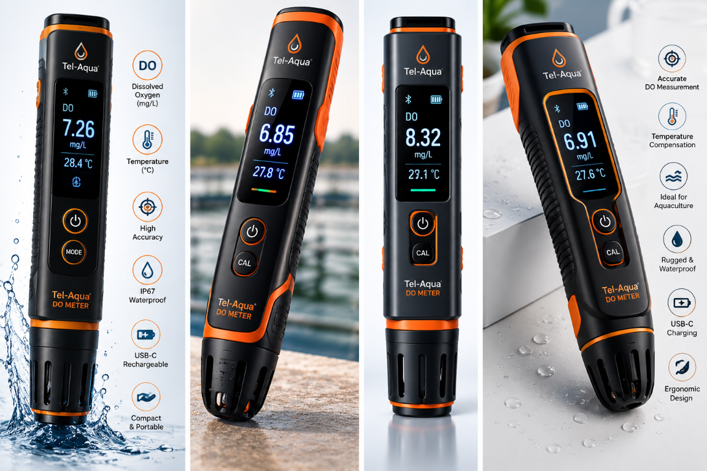

Dissolved Oxygen Measurement
Supports basic dissolved oxygen monitoring for pond and water-quality checks.

Official Tel-Aqua DO meter product image.
Monitor dissolved oxygen levels in your pond and make informed water-quality decisions with the Tel-Aqua DO Meter. It is designed to support routine field checks and practical pond management decisions for aquaculture operations.
Dissolved oxygen is an important parameter for understanding pond water conditions. Regular monitoring can help farmers understand changes in oxygen availability and respond appropriately as part of their overall pond-management practices.
Use more specific information if it is later confirmed. Until then, the feature list below stays clear and non-misleading.
Supports basic dissolved oxygen monitoring for pond and water-quality checks.
Designed for quick reading and straightforward on-site monitoring.
Built for field use and practical checking across pond or tank conditions.
Useful as part of routine water-quality observation for fish and shrimp ponds.
Simple operation helps support faster decision-making in the field.
Additional details such as measurement range, resolution, or accessories will be added when available.
Check dissolved oxygen at the pond or tank location to understand current conditions.
Review the readings to understand how oxygen levels relate to changing water conditions.
Use the information to support informed pond-management decisions and routine monitoring.